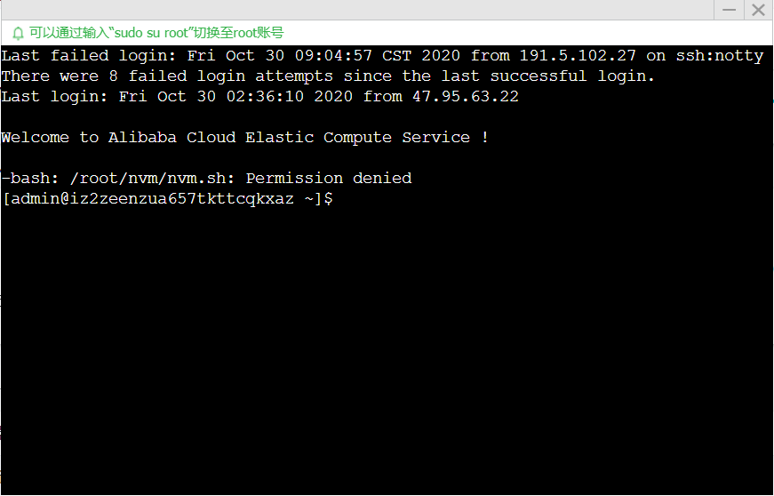
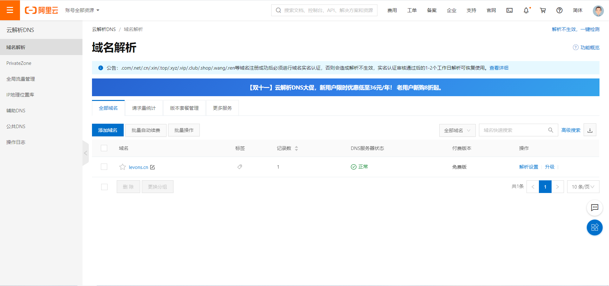

Cloudmusic App（node项目）的上线部署
这几天花时间把我的cloudmusic项目部署到阿里云服务器上，学习了好多相关知识以及linux的命令，记录一下
上线域名：levons.cn
后面我会将该音乐播放器项目放在子域名里，主域名做首页导航
一. 准备工作
上线前需要准备的东西：
- 完整可上线部署的项目：我的cloudmusic项目前后端分离，所以有两个需要
node app.js命令启动的文件夹 - 域名：阿里云可购买
- 服务器：用学生优惠价在阿里云购买的轻量应用服务器，应用镜像选用nodeJS，基于Centos7，买的大陆内的服务器，所以需要备案
二. 启用服务器搭建node环境
登录阿里云控制台，配置好远程登录密码，点击远程连接，进入服务器命令行界面

随后切换root账号
1 | sudo su root |
进入/home/admin文件夹，也可以是别的文件夹，等会我会把项目文件放在这
1 | cd /home/admin |
接下来配置node环境，我是用nvm，如果嫌github慢可以fork到gitee下载或者还有别的方法，服务器应该是有编译node环境需要的东西的，所以可以直接下载node
1 | # 下载nvm |
我就是如此搭建node环境的，就是再次登录服务器在admin文件夹下又会使用不了这些命令了，可能是我对linux不够了解吧，现在每次重新远程连接服务器都要在/home/admin文件夹下执行一下source nvm/nvm.sh这些环境又回来了。
这个问题需要我去多了解一下Centos7系统再做解释
三. 上传代码
使用win10命令行远程连接传送文件可以使用SSH（服务器需要开启SSH端口22），好像是安装git环境后就有，我是有的
1 | # 该命令是远程连接服务器，效果和在阿里云控制台点击远程连接差不多，就是需要输入密码，不想每次都输入可以密钥登录 |
这里我便将我项目的前后端代码传入服务器/home/admin文件夹中了
四. 开启服务
在服务器下切换到项目文件夹直接用node app.js便可开启服务，但为了服务不因命令行环境的关闭而销毁使用pm2管理node进程
1 | # 全局安装pm2 |
如此项目前后端便开启了端口服务，要注意html端口开在80端口才能再dns解析后直接跳转到html页面，后端接口的服务端口需要在阿里云控制台防火墙添加规则允许外网对该端口的访问。要使访问域名跳转指定端口服务可以配置nginx反向代理服务。
做好这些后就可以在浏览器中输入ip访问到项目app
五. 域名解析
使用阿里云的免费解析，在云解析DNS/域名解析页面添加域名

随后在解析设置里添加记录，记录类型选A，主机记录填@，解析线路默认，记录值填写服务器ip，TTL随意默认
之后等待一会在浏览器输入域名就能访问到项目app了（前提是域名备案过了）。